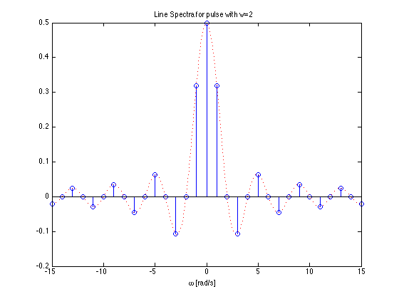
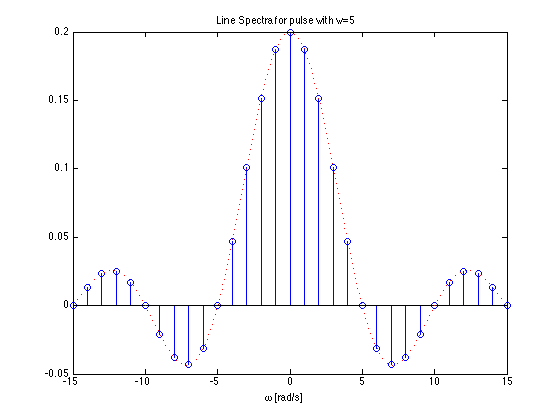
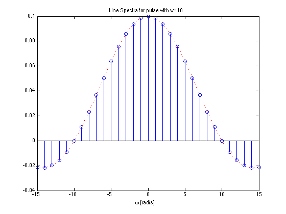
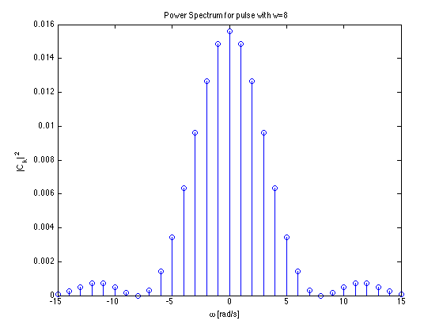

Line Spectra and their Applications
This section concludes our introduction to Fourier Series.
In the last section we saw that we could exploit the complex exponential $e^{j\omega t}$ to redefine trigonometric Fourier Series into the Exponential Fourier Series and in so doing we eliminate one integration and at the same time simplify the calculation of the coefficients of the Fourier series.
In this section we show how the Exponential form of the Fourier Series leads us to the ability to present wavefoms as line spectra, simplifies the calculation of power for systems with harmonics and leads in the limit as $T$ approaches infinity to the Fourier Transform.
Agenda
- Line spectra
- Power in periodic signals
- Steady-state response of an LTI system to a periodic signal
Line Spectra
When the Exponential Fourier series are known is is useful to plot the amplitude and phase of the harmonics on a frequency scale.
This is the spectrum of the Exponential Fourier Series calculated last time

Line Spectra for Trig. FS
If we take the results for the Exponential Fourier Series and gather terms, the amplitudes for the Trig. Fourier Series are given by:
Applying this to the previous result we get

Example 3
Compute the exponential Fourier series for the waveform shown below and plot its line spectra.

Solution
The recurrent rectangular pulse is used extensively in digital communication systems. To determine how faithfully such pulses will be transmitted, it is necessary to know the frequency components.
What do we know?
- The pulse duration is $T/w$.
- The recurrence interval $T$ is $w$ times the pulse duration.
- $w$ is the ratio of pulse repetition time to the pulse duration – normally called the duty cycle.
Coefficients of the Exponential Fourier Series?
Given
- Is the function even or odd?
- Does the signal have half-wave symmetry?
- What are the cosequencies of symmetry on the form of the coefficients $C_k$?
- What function do we actually need to integrate to compute $C_k$?
DC Component?
Let $k = 0$ then perform the integral
Harmonic coefficients?
Integrate for $k\ne 0$
Exponential Fourier Series?
Effect of pulse width on frequency spectra
- Recall pulse width = $T/w$
w = 2
$\Omega_0 = 1$ rad/s; $w = 2$; $T = 2\pi$ s; $T/w = \pi$ s.

w = 5
$\Omega_0 = 1$ rad/s; $w = 5$; $T = 2\pi$ s; $T/w = 2\pi/5$ s.

w = 10
$\Omega_0 = 1$ rad/s; $w = 10$; $T = 2\pi$ s; $T/w = \pi/5$ s.

Implications
- As the width of the pulse reduces the width of the freqency spectra needed to fully describe the signal increases
- more bandwidth is needed to transmit the pulse.
Note
Text book seems to get the wrong results. Karris plots $\sin(wx)/(wx)$ rather than $\sin(x/w)/(x/w)$ in producing the diagrams shown in Figs. 7.36—7-38.
However, if you view $\sin(wx)/wx$ as in indication of the bandwidth needed to transmit a pulse of width $T/w$ the plots Karris gives make more sense.
Example 4
Use the result of Example 1 to compute the exponential Fourier series of the impulse train $\delta(t\pm 2\pi k)$ shown below

Solution
To solve this we take the previous result and choose amplitude (height) $A$ so that area of pulse is unity. Then we let width go to zero while maintaining the area of unity. This creates a train of impulses $\delta(t\pm 2\pi k)$.
and, therefore
Try it!
Proof!
From the previous result,
and the pulse width was defined as $T/w$, that is
Let us take the previous impulse train as a recurrent pulse with amplitude
Pulse with unit area
The area of each pulse is then
and the pulse train is as shown below:

New coefficents
The coefficients of the Exponential Fourier Series are now:
and as $\pi/w \to 0$ each recurrent pulse becomes a unit impulse, and the pulse train reduces to a unit impulse train.
Also, recalling that
the coefficents reduce to
That is all coefficients have the same amplitude and thus
Spectrum of Unit Impulse Train
The line spectrum of a sequence of unit impulses $\delta(t \pm kT)$ is shown below:

Another Interesting Result
Consider the pulse train agin:
What happens when the pulses to the left and right of the centre pulse become less and less frequent? That is what happens when $T \to \infty$?
Well?
- As $T\to \infty$ the fundamental frequency $\Omega_0 \to 0$
- We are then left with just one pulse centred around $t=0$.
- The frequency difference between harmonics also becomes smaller.
- Line spectrum becomes a continous function.
This result is the basis of the Fourier Transform which is coming next.
Power in Periodic Signals
In your previous courses you may have come across the definitions of Signal Energy, Average Signal Power and Root Mean Square Power:
Parseval’s Theorem
Parseval’s Theorem states that the total average power of a a periodic signal $f(t)$ is equal to the sum of the average powers of all its harmonic components.
The power in the $k$th harmonic $C_ke^{jk\Omega_0 t}$ is given by
Since $P_k = P_{-k}$, the total power of the $k$th harmomic is $2P_k$.
Parseval’s theorem states that
RMS Power
By a similar argument:
Example 4
Compute the average power of a pulse train for which the pulse width is $T/2$ (duty cycle 50%). Use the previous result:
as your starting point.
Power Spectrum
| The power spectrum of signal is the sequence of average powers in each complex harmonic: $ | C_k | ^2$. For real perodic signals | ||||
| the power spectrum is a real even sequence as $ | C_{-k} | ^2 = | C_k^* | ^2 = | C_k | ^2$. |
This is the power spectrum for a pulse with width $T/8$.

Note that most of the power is concentrated at DC and in the first seven harmonic components. That is in the frequency range $[-14\pi/T,+14\pi/T]$ rad/s.
Total Harmonic Distortion
Suppose that a signal that is supposed to be a pure sine wave of amplitude A is distorted as shown below

This can occur in the line voltages of an industrial plant that makes heavy use of nonlineear loads such as electric arc furnaces, solid state relays, motor drives, etc (E.g. Tata Steel!)
THD Defined
Clearly, some of the harmonics for $k\ne \pm 1$ are nonzero. One way to characterie the distortion is to compute the ratio of average power in all the harmonics that “should not be present”, that is for $k > 1$, to the total average power of the distorted sine wave. The square-root of this ratio is called the total harmonic distortion (THD) of the signal.
If the signal is real and based on a sine wave (that is odd), then $C_k=0$ and
| and we can define the THD as the ratio of the RMS value for all the harmonics for $K>1$ (the distortion) to the RMS of the fundamental which is $\sqrt{2\left | C_1\right | ^2}:$ |
Computation of THD

Steady-State Response of an LTI System to a Periodic Signal
The response of an LTI system with impulse response $h(t)$ to a complex exponential signal $e^{st}$ is the same complex exponential multiplied by a complex gain: $y(t) = H(s)e^{st}$, where:
In particular, for $s = j\omega$, the output is simply $y(t)=H(j\omega)e^{j\omega t}$.
The complex functions $H(s)$ and $H(j\omega)$ are called the system’s transfer function and frequency response, respectively.
By superposition
The output of an LTI system to a periodic function with period $T$ represented by a Fourier series is given by:
where $\Omega_0 = T/2\pi$ is the fundamental frequency.
Thus $y(t)$ is a Fourier series itself with coefficients $D_k$:
Implications of this important result
The effect of an LTI sustem on a periodic input signal is to modify its Fourier series through a multiplication by its frequency response evaluated at the harmonic frquencies.
Illustration
This picture below shows the effect of an LTI system on a periodic input in the frequency domain.

Filtering
A consequence of the previous result is that we can design a system that has a desirable frequency spectrum $H(jk\Omega_0)$ that retains certain frequencies and cuts off others.
We will return to this idea later.
Summary
Summary
- Line spectra
- Power in periodic signals
- Steady-state response of an LTI system to a periodic signal
Answers
Given
- Is the function even or odd? even $f(t) = f(-t)$!
- Does the signal have half-wave symmetry? No!
- What are the cosequencies of symmetry on the form of the coefficients $C_k$? $C_k$ will be real values. Trig. equivalent no sine terms.
- What function do we actually need to integrate to compute $C_k$? We only need to integrate between the limits $-\pi/w \to \pi/w$
Solution: DC component!
or
Harmonic coefficients!
Exponential Fourier Series!
Solution 4
$w = 2$ so:
Write down an expression for $P$ using Parseval’s Theorem
P
sinc$(k\pi/2) = 0$ for $k$ even ($k=0,2,4,6,\ldots$) so…?
P for k odd
$\sin(k\pi/2) = 1$ for $k$ odd ($k=1,3,5,7,\ldots$) so…?